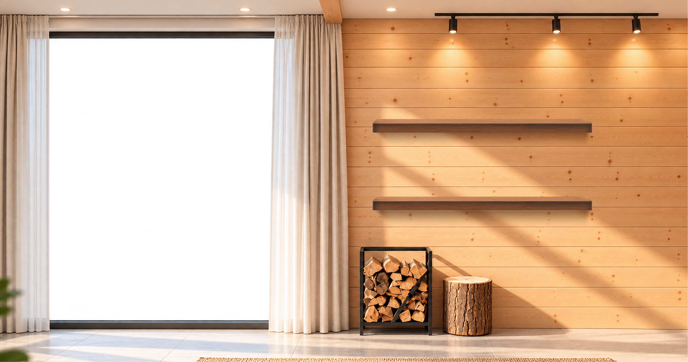

In 2017, I started my career as an electrician. Later, I moved to Chennai and worked at Royal Enfield as a production operator.
After losing my job, I decided to try something completely different—design.
I started learning graphic design on my own, began freelancing in 2020, and eventually discovered UI/UX design.
Years of self-learning, rejections, feedback, and practice took me from designing small graphics to leading design teams and building digital products.
From fixing wires to designing experiences — my career was never planned, it was built.